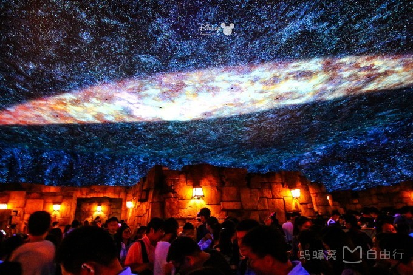
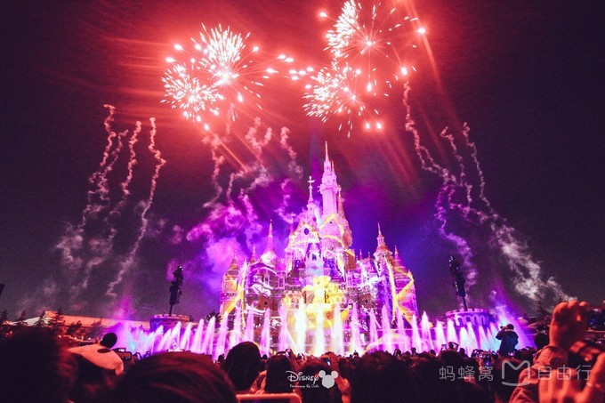
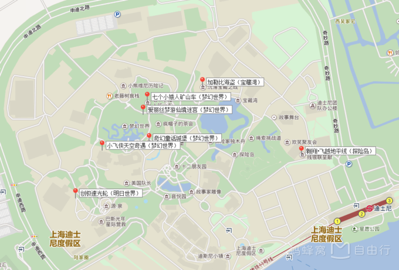
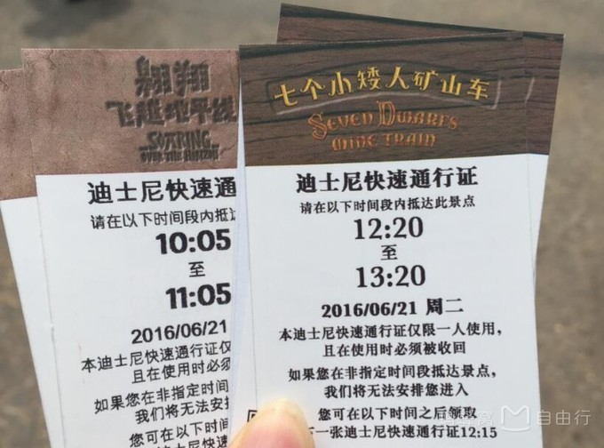
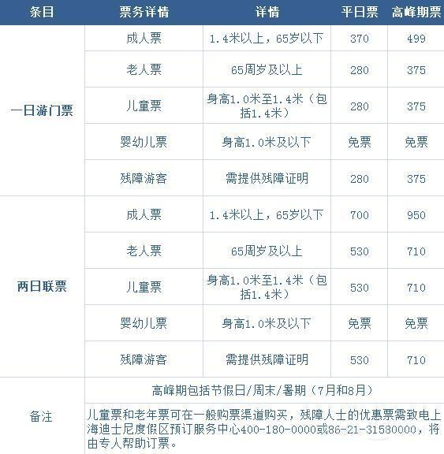
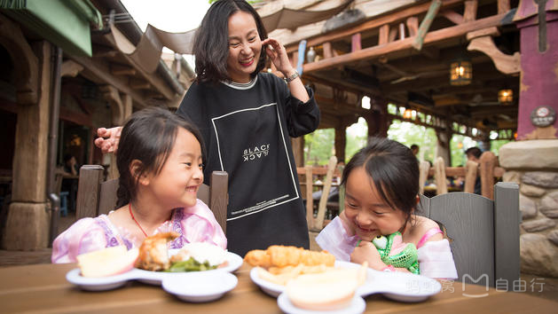
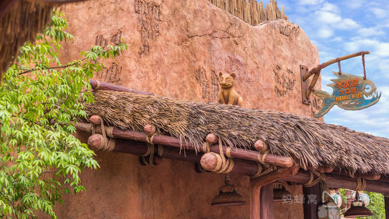
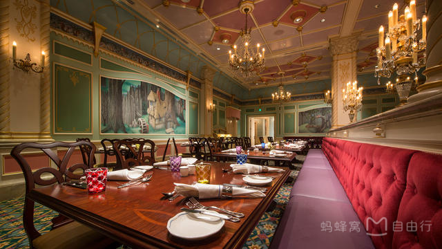

上海迪士尼究竟怎么玩，看完这篇你就懂啦！
最近，随着《欢乐颂》里关关和谢童“一吻定情”，上海迪士尼又双叒火了一发。震撼的飞越地平线，刺激的过山车，绝美的夜光幻影秀，这一切都太适合冒着粉红泡泡的初恋少女心了吧！
上海迪士尼 • 必玩篇
Q1：上海迪士尼有哪些必玩项目？
A：①翱翔•飞越地平线（探险岛）

②七个小矮人矿山车（梦幻世界）
③创极速光轮（明日世界）
④加勒比海盗—沉落宝藏之战（宝藏湾）
⑤小飞侠天空奇遇（梦幻世界）
⑥奇幻童话城堡（梦幻世界）
⑦爱丽丝梦游仙境迷宫（梦幻世界）
Q2：上海迪士尼的点亮奇梦：夜光幻影秀（烟花表演）几点开始？持续多久？

A：上海迪士尼的点亮奇梦：夜光幻影秀是晚上8点开始的，持续30分钟。如果想要观看效果好一点，建议大家提前半小时去占位，不然就只能在很后面，这样会看不到水幕，但也不要太前面，否则城堡看不全面，烟花是在两侧冲天的。

上海迪士尼 • 路线篇
Q3：玩转迪士尼的路线有哪些？
A：①热门项目全覆盖路线：翱翔•飞越地平线领快速通行证 → 创极速光轮 → （适当穿插明日世界主题区的其他项目） → 漫游童话时光 → （适当穿插梦幻世界主题区的其他项目） → 花车巡游 → 加勒比海盗•沉落宝藏之战 → （适当穿插宝藏湾或探险岛其他项目） → 其他项目 → 米奇大街 → 城堡夜光幻影秀
② 刺激惊险路线：创极速光轮 → 喷气背包飞行器 → 金色童话盛典演出 → 七个小矮人矿山车 → 小飞侠天空奇遇记 → 晶彩奇航 → 翱翔•飞越地平线 → 绳索挑战道 → 雷鸣山漂流 → 加勒比海盗—沉落宝藏之战
③ 亲子游路线：漫游童话时光 → 小熊维尼历险记 → 爱丽丝梦游仙境迷宫 → 七个小矮人矿山车快速通行证 → 花车巡游 → 小飞侠天空奇遇记 → 晶彩奇航 → 冰雪奇缘•欢唱盛典演出 →小飞象 → 幻想曲旋转木马 → 米奇大街 → 城堡夜光幻影秀
上海迪士尼 • 省时篇
如何在上海迪士尼节省排队时间？第一：快速通行证（FP）
Q4：快速通行证（Fastpass）是什么？
A：想要更有效率地畅玩迪士尼，强烈推荐大家一个少排队省时的神器——快速通行证（Fastpass，以下简称FP）。一般而言，一些热门景点可能需要排队三四个小时，如果领取FP，并在特定时间段体验指定景点，实际排队等候时间只有5-15分钟。大家可在适用景点园区内的游客服务中心领取FP，每天数量有限，先到先得。目前上海迪士尼一张门票一个项目一次只能领取一张FP卡。FP卡底部注明你下次可再申领的时间（一般的时间间隔是2个小时），到了这个时间，你就可以再领下一张快速通行证了。中午以后基本上都会领不到FP卡。特别说明FP是免费的，大家拿着有效门票就可以领取。建议大家将FP用在排队超过90分钟的项目上，这样才能使它的价值最大化哟。GET了这项技能，赶快用起来。
Q5：如何使用FP？
第一步：你需要找到发放FP的机器。目前，提供FP的三大游客服务处包括：“梦幻世界”游客服务中心、“探险岛”游客服务中心、“明日世界”游客服务中心。第二步：找到机器后，扫描你当天的有效门票, 选择你想游玩的游乐项目后，即可得到一张快速通行证。第三步，在规定的时间内抵达该项目等候区。按照FP上显示的时间段返回到该游乐项目，在排队区根据演职人员的指引走快速通行证入口。这样，你就可以不慌不忙地进入快速通道，开始快乐体验啦！

上海迪士尼 • 门票篇
Q6：迪士尼门票价格如何计算？哪些人群有购票优惠？
A：迪士尼门票分为一日游门票和两日游门票，且仅对1.4米以下儿童与65岁以上老人以及残障人士有所优惠，其余人群无优惠。

上海迪士尼 • 美食篇
Q7：上海迪士尼里面有些什么美食推荐？
1：老藤树食栈（地址：梦幻世界）

2：水虎鱼大口咬（地址：探险岛）

3：皇家宴会厅（地址：梦幻世界）
